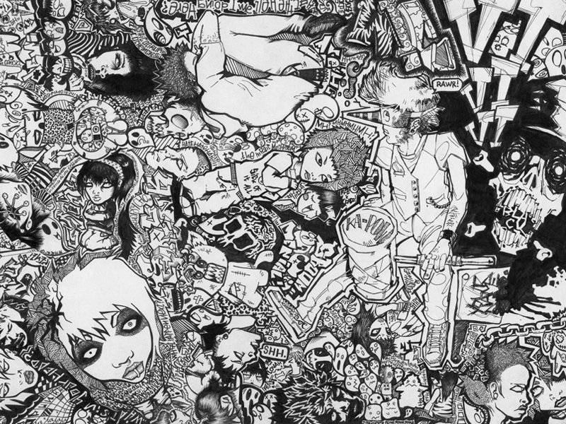

Ciao! Sono Francesca, una graphic designer appassionata di illustrazione.
Nel mio percorso da creativa ho lavorato diversi anni per un brand d'abbigliamento per bambini,
mi occupavo prevalentemente della creazione delle collezioni e di tutta la parte grafica:
dall'ideazione dei vari design alla stampa digitale su tessuto
Per questo brand ho avuto l'opportunità di realizzare alcuni design dedicati a Carolina Kostner,
pattinatrice su ghiaccio di fama internazionale.
Ho realizzato le illustrazioni dei costumi da gara utilizzati durante i campionati,
ideati dalla stessa Carolina in collaborazione con il team Swarovski
e l'azienda per cui lavoravo. Questi sono poi stati inseriti all'interno della Capsule Collection a lei dedicata.
Ho continuato per diversi anni a lavorare nel settore della moda, dal tessile alla maglieria.
Per questo altro brand mi sono occupata dell'ideazione di una collezione donna e le relative stampe su tessuto.
Partendo da illustrazioni realizzate con tecniche tradizionali (in questo caso acquerello) e succesiva elaborazione grafica.
_______________________________________________________________________________________
Successivamente ho lavorato come grafica per un'azienda che si occupa di strenne.
Ho realizzato per loro diversi packaging e opuscoli descrittivi che venivano poi inseriti all'interno dei cesti regalo.
_______________________________________________________________________________________
|  |
Per un breve ma intenso periodo ho avuto modo di collaborare con uno studio di tatuaggi,
dove oltre ad occuparmi della parte grafica per la stampa sulle magliette,
ho avuto modo di dedicarmi ad una delle mie passioni più grandi: quella per l'illustrazione.